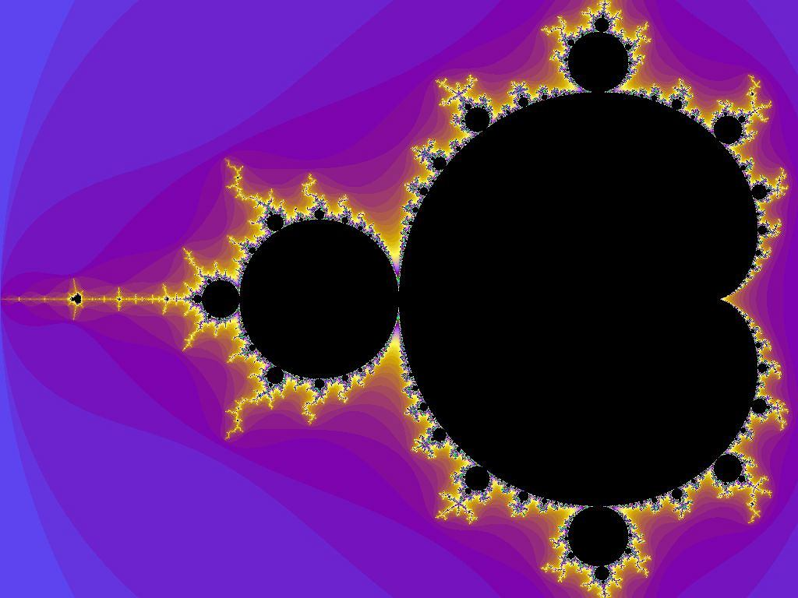

Interests
2D Games
My interest in making 2D games started when I was in primary school and made a console snake game in C++. Then I went on to making simple platformers in Gamemaker. In University I made a two small games one of which I made with my brother who made all the graphics.

Fractals
I like how simple the fractals are and yet programming one gives beautiful results. It is nice to thing that there's harmony in math.
Hiking
I was raised in a village next to Karkonoski National Park and I love coming back to my mountains to enjoy the views.

Gym
I want to be a programist but a strong one.